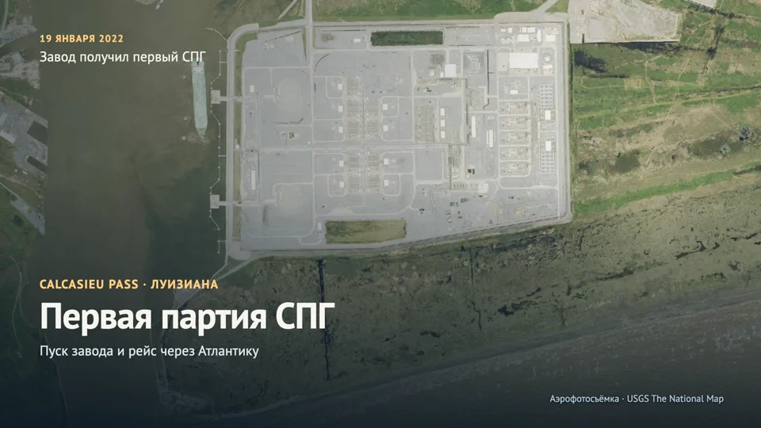
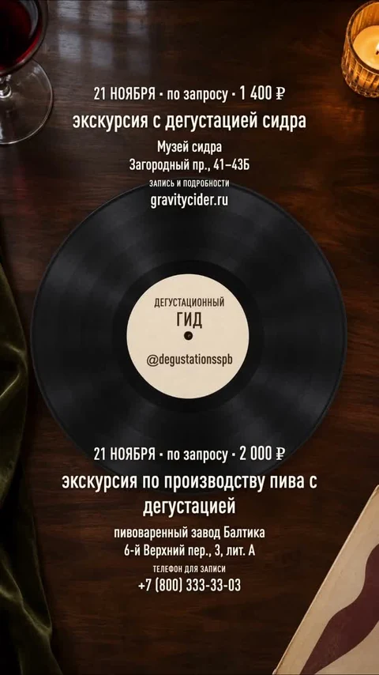
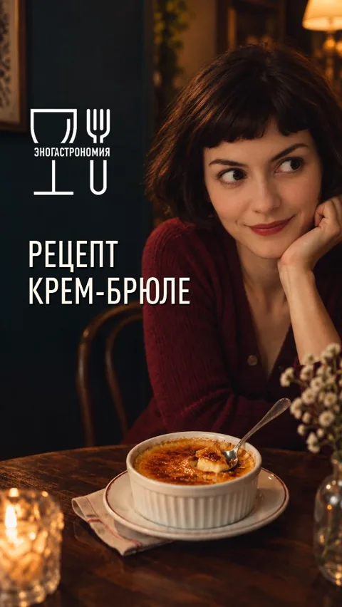

AI-ВИДЕОКРЕАТОР · МОУШН-ДИЗАЙНЕР
Александр Травин
Серийные ролики и эксплейнеры
для брендов и медиа
Избранные работы
Фильмография
УЧЕБНЫЙ ФИЛЬМ · 6:55 Calcasieu Pass. Первая партия СПГ Сценарий, графика, озвучка и монтаж.
СЕРИЙНЫЕ АНОНСЫ · REMOTION Виниловая пластинка Один шаблон для разных выпусков гида.
ГЕНЕРАТИВНЫЙ ВИДЕОРЕЦЕПТ · 0:45 Крем-брюле Гастрономические макропланы и звуковой монтаж.